正确 | Image 11181
True: 190.Red_cockaded_Woodpecker
Pred: 190.Red_cockaded_Woodpecker (1.000)
Visualization target: 190.Red_cockaded_Woodpecker
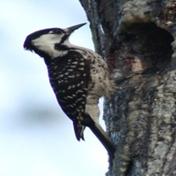
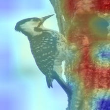
人工标注：Local detail / Bird body / Background
Visualization type: gradient-weighted final-stage Swin feature map.
True: 190.Red_cockaded_Woodpecker
Pred: 190.Red_cockaded_Woodpecker (1.000)
Visualization target: 190.Red_cockaded_Woodpecker


人工标注：Local detail / Bird body / Background
True: 186.Cedar_Waxwing
Pred: 186.Cedar_Waxwing (1.000)
Visualization target: 186.Cedar_Waxwing
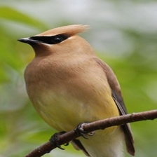
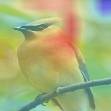
人工标注：Local detail / Bird body / Background
True: 016.Painted_Bunting
Pred: 016.Painted_Bunting (1.000)
Visualization target: 016.Painted_Bunting
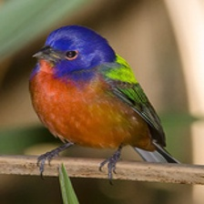
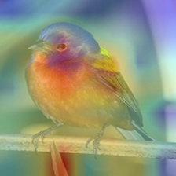
人工标注：Local detail / Bird body / Background
True: 124.Le_Conte_Sparrow
Pred: 124.Le_Conte_Sparrow (1.000)
Visualization target: 124.Le_Conte_Sparrow
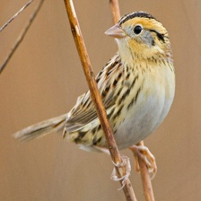
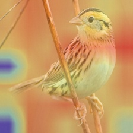
人工标注：Local detail / Bird body / Background
True: 020.Yellow_breasted_Chat
Pred: 020.Yellow_breasted_Chat (1.000)
Visualization target: 020.Yellow_breasted_Chat
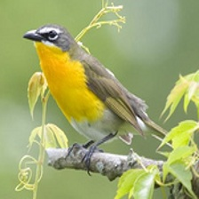
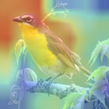
人工标注：Local detail / Bird body / Background
True: 081.Pied_Kingfisher
Pred: 081.Pied_Kingfisher (1.000)
Visualization target: 081.Pied_Kingfisher
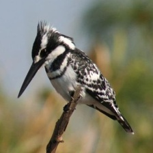
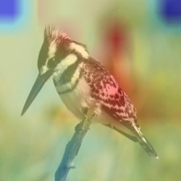
人工标注：Local detail / Bird body / Background
True: 018.Spotted_Catbird
Pred: 018.Spotted_Catbird (1.000)
Visualization target: 018.Spotted_Catbird

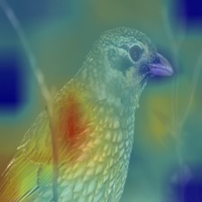
人工标注：Local detail / Bird body / Background
True: 016.Painted_Bunting
Pred: 016.Painted_Bunting (1.000)
Visualization target: 016.Painted_Bunting
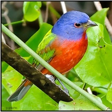
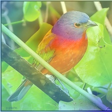
人工标注：Local detail / Bird body / Background
True: 088.Western_Meadowlark
Pred: 088.Western_Meadowlark (1.000)
Visualization target: 088.Western_Meadowlark
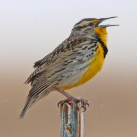
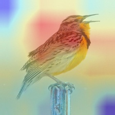
人工标注：Local detail / Bird body / Background
True: 189.Red_bellied_Woodpecker
Pred: 189.Red_bellied_Woodpecker (1.000)
Visualization target: 189.Red_bellied_Woodpecker
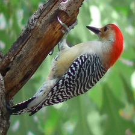
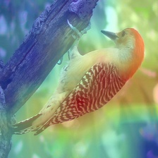
人工标注：Local detail / Bird body / Background
True: 191.Red_headed_Woodpecker
Pred: 191.Red_headed_Woodpecker (1.000)
Visualization target: 191.Red_headed_Woodpecker
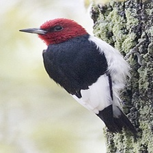
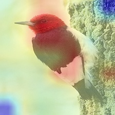
人工标注：Local detail / Bird body / Background
True: 067.Anna_Hummingbird
Pred: 067.Anna_Hummingbird (1.000)
Visualization target: 067.Anna_Hummingbird
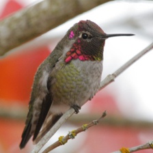
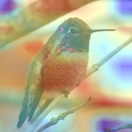
人工标注：Local detail / Bird body / Background
True: 123.Henslow_Sparrow
Pred: 124.Le_Conte_Sparrow (1.000)
Visualization target: 124.Le_Conte_Sparrow
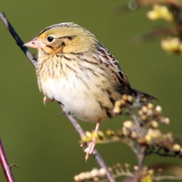
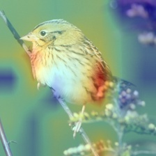
人工标注：Local detail / Bird body / Background
True: 131.Vesper_Sparrow
Pred: 076.Dark_eyed_Junco (1.000)
Visualization target: 076.Dark_eyed_Junco

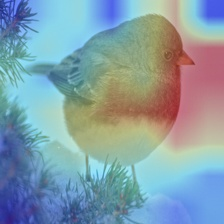
人工标注：Local detail / Bird body / Background
True: 109.American_Redstart
Pred: 021.Eastern_Towhee (1.000)
Visualization target: 021.Eastern_Towhee
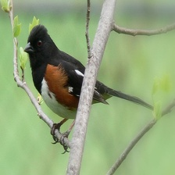
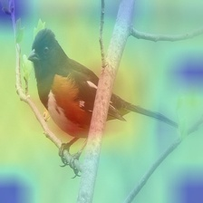
人工标注：Local detail / Bird body / Background
True: 005.Crested_Auklet
Pred: 008.Rhinoceros_Auklet (1.000)
Visualization target: 008.Rhinoceros_Auklet
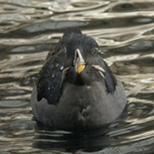
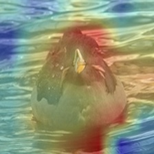
人工标注：Local detail / Bird body / Background
True: 123.Henslow_Sparrow
Pred: 124.Le_Conte_Sparrow (1.000)
Visualization target: 124.Le_Conte_Sparrow
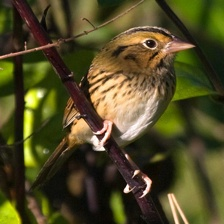
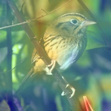
人工标注：Local detail / Bird body / Background
True: 043.Yellow_bellied_Flycatcher
Pred: 038.Great_Crested_Flycatcher (0.999)
Visualization target: 038.Great_Crested_Flycatcher
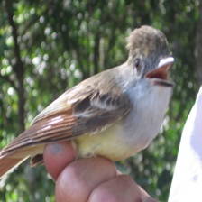
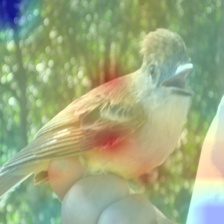
人工标注：Local detail / Bird body / Background
True: 179.Tennessee_Warbler
Pred: 154.Red_eyed_Vireo (0.999)
Visualization target: 154.Red_eyed_Vireo
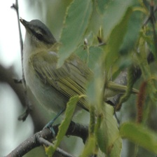
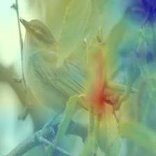
人工标注：Local detail / Bird body / Background
True: 184.Louisiana_Waterthrush
Pred: 183.Northern_Waterthrush (0.999)
Visualization target: 183.Northern_Waterthrush
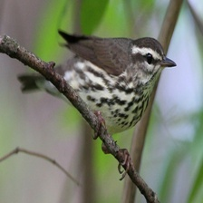
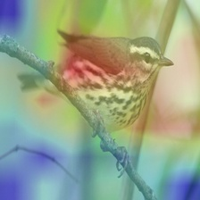
人工标注：Local detail / Bird body / Background
True: 030.Fish_Crow
Pred: 029.American_Crow (0.999)
Visualization target: 029.American_Crow
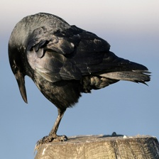
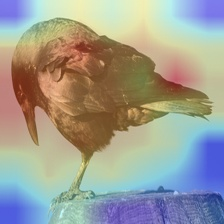
人工标注：Local detail / Bird body / Background
True: 015.Lazuli_Bunting
Pred: 014.Indigo_Bunting (0.997)
Visualization target: 014.Indigo_Bunting
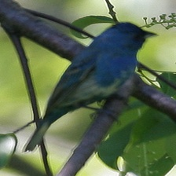
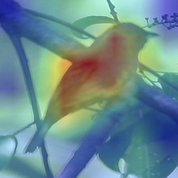
人工标注：Local detail / Bird body / Background
True: 033.Yellow_billed_Cuckoo
Pred: 038.Great_Crested_Flycatcher (0.997)
Visualization target: 038.Great_Crested_Flycatcher
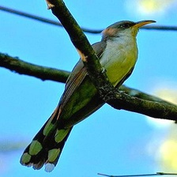
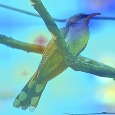
人工标注：Local detail / Bird body / Background
True: 167.Hooded_Warbler
Pred: 180.Wilson_Warbler (0.997)
Visualization target: 180.Wilson_Warbler
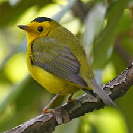
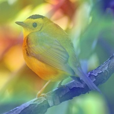
人工标注：Local detail / Bird body / Background